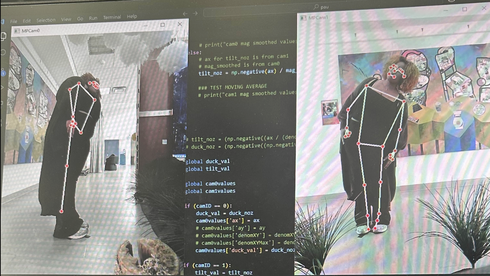
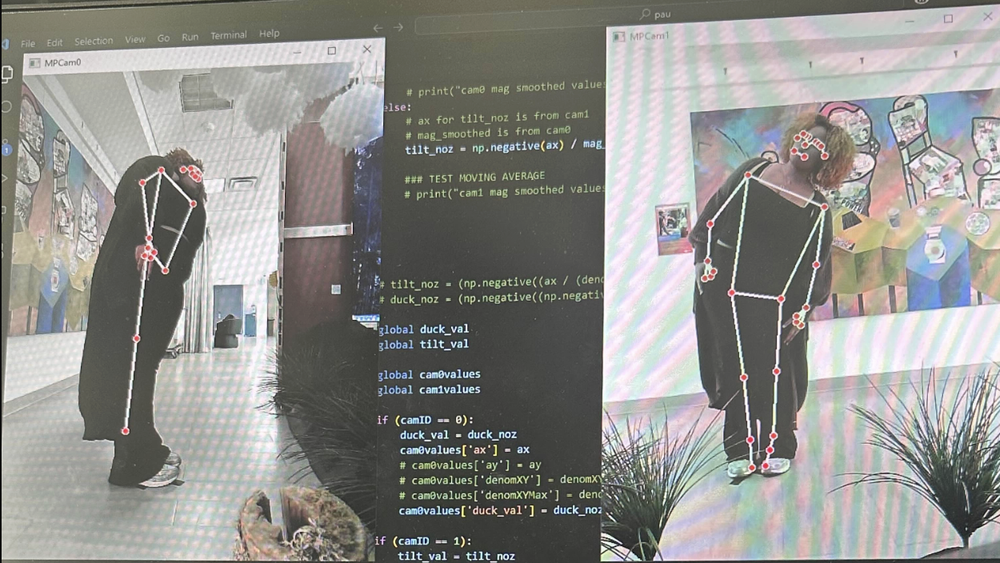

During my time in the Electronic Artrium VIP at Georgia Tech, I was in charge of developing the pose programs that would take in coordinate data of hands, arms, eyes, etc and translate them (through lots of math equations and graphs) to how much a player was tilting or pointing. This data would then be used in interactive games for our exhibit.
 


One of the biggest challenges was that I was taking data from two cameras (front and side view) and had to utilize multithreading to obtain the data simultaneously. Then, the points would be calculated on a separate thread after the data was processed. Points that resulted in errors (absurdly high numbers) also had to be averaged out so that they would not affect gameplay. The result was that a single point representing a player's pointing position would be sent to Unity via UDP to be used in the game. The process was similar for ducking and tilting with different calculations. The picture above on the right shows tape marking "cell positions" for areas that the user could point to (this was used for game logic).